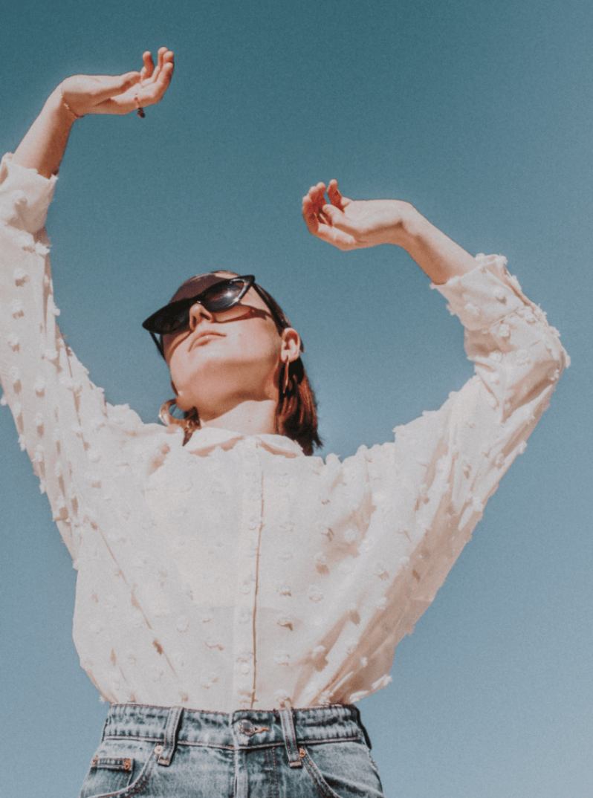

Home
About
I’ll start by telling you that I have an unwavering passion for cheese, breaking the caramel crust on top of crème brûlées, sorting my clothes by colour, finding shapes for clouds or making lists. But that doesn’t help you understand what kind of graphic designer I am. So I’ll tell you instead that I draw,everywhere, all the time, since kindergarten, that I collect design magazines and flyers. How curious I am and how much I like to observe. I’m going to tell you about my attraction for beauty, in all its forms, for museums and art, about my rigour and my demands on myself and my work. I also want to tell you how much I love to share, and my continual desire to create and experiment.
